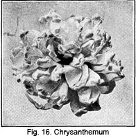

1928—The New-Way Course in Millinery and Hat Design
Lesson 12—Making Your Own Trimmings
Make Your Own Trimmings
The milliner who takes pride in her work, who likes to follow through a hat from the birth of its idea to the finishing touches of its achievement, makes her own trimmings. She is not content to make the hat—and buy the trimmings. Unless the hat is made by her entirely, from the frame to the final touches, she does not feel that she has created a real hat. If her trimmings are bought she feels, rightly, that the hat is made half by her, half by someone else.
So you see, before you can be an expert milliner you must be able to make all your own trimmings. You must be able to make trimmings that harmonize with the hat and that harmonize with the wearer. You must be able to make trimmings that are not only as pretty as those you can buy, but as artistic, as attractive.
This lesson will be devoted entirely to the making of ribbon, flower and other trimmings. Because it is an interesting subject, you will find the lesson interesting; but remember also that it is an important subject, and be sure to study it carefully.
Flower-Making
Let us first consider the making of flowers. Artificial flowers have been used in millinery since the early part of the nineteenth century, but were at first crude and inartistic. In the past few years, the art of flower-making has taken many great strides forward, and today they are true replicas of the flowers in Nature's garden.
The use of hand-made flowers both in millinery and dressmaking increases each year. They are exorbitantly priced in the shops, but with a little practice anyone should be able to duplicate them at home at a trifling cost. To make flowers you will require:
- Green Tie Wire
- Brown and Green Gum Tissue
- Cotton Batting
- Milliner's Glue
- Yellow Stamens
- Dark Green Tissue Paper
- and the Material from which you intend to make the flowers.
There are many fabrics from which flowers can be made—satin, velvet, georgette, maline, yarn—almost any fabric. But most of these materials are specially prepared. You will be able to purchase all the materials you may need for flower-making in your favorite milliner's supply shop.
It is a wise plan to keep a scrap-bag in your work room, into which you slip all the little odds and ends of materials. These can very often be transformed into delightful trimmings. The new vogue for vari-colored flowers on coats warns against the throwing away of even the least bit of usable material.
It is not difficult to prepare the petals for a flower; the arrangement of the petals requires the most care. Always study the face of the blossom you are making and try to make it look as natural as possible. The wise milliner has pictures of all the different kinds of flowers handy, so that she can refer to them whenever necessary.
The matter of foliage is important. Correct foliage must be used, and must be in coloring that harmonizes with the flowers themselves. Suppose we spend a moment considering the correct materials for various kinds of flowers, and correct foliage to use with those flowers.
Materials and Foliage
Flowers made of silk, velvet, cotton and linen are familiar to you, of course, for they are constantly being used. But the newer vogue is for flowers of wool, felt and chenille. Velvet flowers are perhaps the richest and most charming in appearance for winter hats and for some types of lace hats. But on summer hats, flowers of fine cotton or linen are best. They are very much daintier and more "summery".
There are some flowers that do not appear natural unless made of silk or satin. Poppies, for instance, are never so pretty as when they are made of fine, light China silk and tinted in shades varying from vivid red to pale pink. This tinting is done with paints mixed with gasoline and applied with a small brush.
Buttercups appear quite natural when made of satin. There can be nothing quite as chic and appropriate for early Spring wear as a hat boasting a bunch of yellow buttercups, with a few black buttercups between them. It carries with it a most natural breath of the season. When the buttercups are made for a child's hat they should be of cotton or linen.
Pansies and violets seem to be most appropriate for the mature woman. Sometimes it pays to buy the violets ready-made, as they are often inexpensive! But if you wish violets that harmonize exactly with the hat materials you are using, if you want violets in exactly the colorings and sizes you desire, then, of course, it is worth while making them at home.
Forget-me-nots are used in the summer, but very rarely alone. They are usually combined with other flowers, as are also mignonette and lilies-of-the-valley. Somehow, these three types of flowers are not nearly so attractive when used alone as they are when used in combination with other flowers. Forget-me-nots come in mauve, blue, tan, pink and black.
Daisies and other flat flowers can be made of linen, cotton or silk as is found most appropriate. These flat flowers with their leaves are very often used on the brims of transparent hats, being laid between the layers of the material of which the hat is made. Lilacs are attractive, and may be used in any color to match or harmonize with the hat. They are correct in colors of deep purple, lavender and white, but many shades of these colors are used.
Lilacs are very often used on hats worn by people who are just discarding mourning wear and who do not wish the change from black to colors to be too striking. Lilacs cannot be made by hand. Most of them are imported from France, and are made of linen.
Fruits are also used a great deal in millinery, and even vegetables made of fine materials. A hat displayed in a fashionable millinery shop recently had a bunch of cherries made from georgette, covering cotton batting. It was most effective.
Among the many fruits used in millinery are cherries, grapes, gooseberries, currants, blackberries and apples. Some hats are made entirely of fruits; others with brims of fruit, others with just one cluster of fruit hanging over one corner. Wheat is used on hats occasionally, but this is one type of trimming it is necessary to buy ready-made.
When grass is used the natural grass is so treated as to toughen it and keep it from shattering. Very often it is dyed. Natural wheat is often used with corn flowers or poppies instead of other foliage.
Most foliage is made smaller than it naturally is. Sometimes it is in the original coloring; sometimes it is dyed to show more brilliant coloring. Autumn leaves may be purchased in the natural colors, bright colorful leaves that add a pleasing touch to the hat. There are many different kinds of foliage, some of which can be made and some of which must be purchased, but you must use your own judgment in selecting the kind of foliage that harmonizes best with the flowers you are using and the hat itself.
You now know the materials that must be used in making flowers. We will proceed with the actual making of the flowers and fruits, giving step-by-step directions which you should be able to follow very easily. Practice making flowers until you are deft and clever with your bits of material, until you can give those little life-like touches that make the blossoms appear natural. And above all, keep abreast of the times. Follow the fashion magazines. Watch the windows of the millinery shops. Do not miss any opportunity to study the new flower and fruit innovations of each season, so that you can interpret other's ideas in your own individual way and be constantly new and up-to-date in your methods and materials.
Making the Full-Blown Rose
Materials Required:
Brace Wire, Tie Wire, Stamens, two and three-quarter yards of No. 12 Ribbon, Silk Thread to match the ribbon.
1. Cut a piece of brace wire 5 or 6 inches in length, straighten it and make a loop at one end. To this looped end, tie a small bunch of stamens, using from eight to twelve according to their size. Use tie wire to hold the stamens in place.
2. Proceed to cut the ribbon in the following manner:
- Cut 8 pieces of ribbon 4 inches long
- Cut 8 pieces of ribbon four and one-half inches long
- Cut 6 pieces of ribbon five inches long
3. Take one of the four-inch pieces of ribbon and fold it crosswise through the center, the right side of the ribbon on the outside.
4. Turn one of the corners at the folded edge over about one-half inch. Fold again, making a roll at the corner. Hold this roll in place by stitching through from the wrong side. Tack with back stitches, opening up the loop if necessary.
5. Work the other corner of the ribbon in exactly the same way. Be very careful to have all stitches concealed.
6. Now treat all the other pieces of ribbon in the same way, so that you have twenty-one neatly turned petals.
7. At the lower or cut edge of your folded pieces, make a plait. When it is finished, the petal will be curved or cupped, and should be just about one-third its original width at the bottom.
8. Separate your petals according to their size. They are now ready to be attached to the stem.
9. Begin with the smallest petals. Take one of them and wrap it around the top of the wire, almost covering the stamens. Sew firmly in place to the wire, using needle and strong thread.
10. Take the second petal and place it on the wire facing the first one. Wrap it around as the first one was, and fasten securely in place. The third and fourth petals are then placed to cover the sides of the first and second petals, and are wrapped around the wire and fastened in the same way.
11. Proceed to fasten the remaining small petals to the stem in the same way, placing each one to cover the edges of the last two that were applied, each pair facing each other.
12. Having firmly attached all small petals in position, the petals of the next size should be sewed in place. Do not place these separately, but sew them together side by side in pairs, and draw the lower edge up tightly. These eight petals should just encircle the rose. Do not draw them too close to the stem, for this will distort the shape of the rose. When finished, your rose should have a pretty, round shape at the top. Sew your eight middle-sized petals in place.
13. The five largest petals are sewed on in the same manner, side by side, encircling the rose. The back of the rose should be finished with a piece of star-shaped green cloth to cover the stitching made to hold the petals in place. The material used for green window shades is just right for this work. Cut this piece and insert the wire stem through the exact center. Press it up close to the base of the flower.
14. To finish your rose, wrap the stem with green tissue paper, or cover it with rubber tubing. This latter can be purchased at a millinery supply shop.
If you have followed these directions carefully, and have done the work neatly, you now have a splendid, attractive, full-blown rose that can be used on a hat, or on an evening gown.
The Latticed Rose
This is an attractive type of rose, and makes a most charming trimming. It is made in the following manner:
1. Cut four petals, two and one-half inches long, of ribbon that is two and one-half inches wide.
2. Double these petals, bringing the cut ends together.
3. Shirr along the cut end.
4. Now cut four petals of three-inch ribbon, each three inches long.
5. Double and shirr in the same way.
6. Cut a square of ribbon one and one-half inches on all sides. Round the corners of it, making a circle.
7. You are now ready to attach the smaller petals to this circle. First sew the shirred end of the petal to the under side of the circle at the edge, bringing the folded edge over to the top.
8. The first edge of the petal will come nearly to the center of the circle, the first two petals being attached to the circle at opposite sides.
9. The next two petals should be attached in the same way, also at opposite sides, leaving a small square opening at the center.
10. The remaining four petals are attached underneath in the same way, but they should be so attached that they form a square opening at the center. The corners of this opening should come exactly between the corners of the other opening made by the first petals.
11. To finish the rose, add stamens to the circle in the center.
Violets
When well-made, violets add a charming note of trimming to the summer or spring hat. Always use fine, violet colored ribbon one-half inch or one-quarter inch wide according to the size of violets desired.
1. To make violets, simply tie a knot in the end of the ribbon drawing it quite tight.
2. Measure two inches, and make another knot. This second knot, when finished, should be exactly two inches from the first.
3. Proceed to make knots at every two inches until you have eight knots. There should be knots at each end.
4. Fold the ribbon back and forth so that the knots all come together in a "bouquet". Use wire for the stems.
5. For the center of the violets, use a bit of yellow velvet or tiny stamens. If you use stamens, two or three are enough; simply attach them to the wire with a bit of green thread.
6. Now gather your ribbon at each fold and attach securely to the wire on which the stamens have been fastened.
7. Arrange the loops with the knots at the end in the form of a flower and wrap the stem to keep the flower in position.
Violets, when made in this manner of fine satin ribbon, are extremely attractive and are as appropriate for wear on dresses or fur garments as they are as hat trimmings.
Remember, "practice makes perfect". Do not be discouraged if you cannot make perfect violets the very first time you try. Keep at it until you do make perfect violets.
Pansies
Before making pansies study the real flowers and make a pattern from which to cut the petals. Notice the coloring of the pansy, the stamens, the stems. The petal is usually one-and-a-quarter inches wide and three-quarters of an inch deep. The colors can be very easily copied from the actual petal. Make a cardboard pattern of one petal so that you will have no trouble making the flower whenever you need it.
To obtain your patterns for a pansy and its foliage, lay a thin piece of paper over Figures 5 and 6 and draw the outlines of the separate petals and leaf. Cut these out and use them for patterns when cutting the velvet for the flower.
1. First cut some green tie wire 8 inches long and loop over at the end.
2. Tie a few small stamens to the stem with a bit of tie wire.
3. Cut your petals, five of them, from scraps of velvet in the correct coloring. Purple and yellow are the natural colors of the pansy, but some are of yellow with dashes of black coming from the center.
4. Having cut the petals, it is now necessary to paste wire to the back of them to give them firmness. Use Millinery cement or glue for this purpose. Shape tie wire the exact shape of the petal, but the least bit smaller so that it does not come exactly at the edge. Then cover the entire under side of the petal, wire and all, with Millinery adhesive.
5. Line the petal by pasting a bit of silk over the adhesive while it is still damp. Trim off neatly at the edges.
6. After wiring and lining, take the two upper petals and apply them to the stem, these first two overlapping each other almost to the center.
7. Put on the side petals alternately, and mount the last petal on the outside of the others.
 To finish your pansy, touch up the center with water colors. If you use
scraps of purple velvet, tiny dashes of yellow will be effective. Sometimes
a touch of green gives a desired color note. But you must go to Mother Nature
for your ideas; it is only by actually studying pansies that you can hope
to duplicate them in materials. The foliage may be cut from green window
shade material and mounted on wire. This wire is glued to the back of the
leaves using Milliner's glue for the purpose.
To finish your pansy, touch up the center with water colors. If you use
scraps of purple velvet, tiny dashes of yellow will be effective. Sometimes
a touch of green gives a desired color note. But you must go to Mother Nature
for your ideas; it is only by actually studying pansies that you can hope
to duplicate them in materials. The foliage may be cut from green window
shade material and mounted on wire. This wire is glued to the back of the
leaves using Milliner's glue for the purpose.
Pansies Made From Yarn
On the next page are illustrations of three types of "flowers that grow from yarn." One is the black-eyed Susan (Fig. 8); one represents yarn pansies (Fig. 7); and the third is a bunch of cherries (Fig. 9). These illustrations are offered as suggestions. We will give you complete directions for making the pansies, and then you can experiment with other flowers, using your own originality.
1. You will need one skein each of two harmonizing colors or two skeins of one color of yarn for each flower, and one skein of green yarn for the leaves. Also one yard of green tie wire, and a crochet hook, No. 2.
2. For the flowers, ch 5, join ch 2, 6 dc in ring, ch 2, 1 sl st in center of flower (*) ch 2, 4 dc in center, 1 sl st in center; repeat from (*) once; ch 6 turn, 1 sl st in back of sl st between the first and second petals, 1 sc (*) 5 dc, ch 2, 1 sc in space, repeat from (*) once and fasten off. You make make the first three petals of one color, and the other two of some harmonizing color.
3. The leaves are made of the green, ch 4, join 8 sc in ring, ch 5, 1 sl st in 1st ch, 9 sc in second ring; break off, leaving an end that can be wound in. Make your leaves as carefully and as realistically as you know how.
4. Now attach stem wire and green yarn to the back of the flower, and cover the stem for about an inch. Then arrange the leaves as you want them and cover stem to end.
5. Finish with a French knot in a harmonizing third color directly in the center of the flower.
Several yarn pansies, all in different but harmonizing colors, adds a gay note of trimming to the hat that no other type of flower can add. If you do not understand the abbreviations for the directions above, see the following note.
- ch means "chain"
- sc means "single crochet"
- sl st means "slip stitch"
- dc means "double crochet"
Poppy
For this flower you will need velvet in the color desired, thin silk for the lining at the back, stamens tie wire, and brace wire.
class="clear"1. Place a piece of thin paper over Fig. 11 of the separated flower and trace a pattern of the petals. Cut these out of the thin paper and use them as a pattern for the petals you are to cut of velvet. The arrangement of the stamens for the center of the poppy is shown at the bottom of Fig. 11.
2. Cut four of these petals from the velvet.
3. With Milliner's paste, paste tie wire around the petals on the wrong side one eighth of an inch from the outer edge.
4. Now paste these four petals to your thin lining silk. This silk should be of the thinnest quality, China or Jap silk.
5. While this is drying, proceed to make the center of the flower. Take a small circle of the velvet about one and one-quarter inch in diameter. Run a shirr string in the edge of this and draw it up to make a soft puff or ball. Attach this to a piece of tie wire which is to be used for the stem and arrange your stamens around this as you will notice in the illustration of the separated poppy. Wrap the ends of these stamens firmly with tie wire to form a base on which to sew the petals of the flower.
6. Now take up the petals that have been pasted to the silk and cut out around the velvet petal making a smooth even edge. The creases shown in the illustration may be omitted, but if desired they are made by pressing a hot hat pin on the velvet to hold the nap down. Be sure this pin is not hot enough to scorch your velvet. Now arrange these petals around the center you have made for the poppy so they will look like the illustration of the finished flower.
7. It may be easier for you to sew these petals in place instead of wiring them, but they should be firmly wound with tie wire at the back after they have been sewed in position. The petals may now be bent into shape of the natural flower and the tie wire which is at the edge of the petal will keep the petal in any desired position. If you wish your flower to be shaded, mix your colors and shade your flower as you wish.
If a larger poppy is desirable five or seven petals may be used, but the most attractive flowers have only four petals.
Field Poppy
The field poppy may be made in the following manner.
1. Cut two circles two inches in diameter. Make these circles out of white china silk. Fold these circles in eighths.
2. Set the flat iron over this to form creases. Prepare a wire by tying yellow stamens to the center or a bit of pale green velvet makes an attractive center for this flower.
3. Run this stem through the center of the two circles and wrap the stem with green tissue paper to hold the flower in position. A bit of tie wire may be necessary directly back of the flower in order to make it firm.
4. Make as many of these flowers as you wish to have in your group of flowers and then prepare color, mixing paint with gasoline as taught in a later lesson and dip your flowers in this prepared paint. These flowers are very attractive if the edges are dipped in a mixture making the edges dark, then this mixture thinned with gasoline and the entire flower dipped in this. This will make the edges of the flower dark and the center light.
The Cherokee Rose
This may be made of either pink or white ribbon. Eighteen and three-quarters inches of number 12 ribbon is required for each rose.
1. Cut this ribbon in strips three and three-quarters inches in length. There will be five of these pieces.
2. This ribbon should be formed into loops just as in the full blown rose; the corners turned down in exactly the same way.
3. Lay two small plaits at the bottom of the ribbon in order to shape the petal. Now shirr the bottom of this petal and draw it up as tight as possible and sew firmly.
4. Take a piece of brace wire and make a small loop in the end of it, wind this loop with a bit of cotton wadding, and cover this small ball of cotton with silk. This silk may be in the palest shade of green, it may be yellow, or pink, but this center should be very tiny and around it should be arranged the stamens necessary for the center.
5. Arrange the petals of the rose around this center, sewing or tying them firmly in place. These petals will necessarily overlap each other a trifle.
6. If the stems of this flower are to show they should be wound with green tissue paper or they should be covered with rubber tubing that may be purchased for this purpose. The star shaped pieces of green cloth may be purchased to cover the finish at the back of all flowers. These pieces are slipped over the stem and against the flower and held in place with a bit of glue, winding the tissue paper against them.
The single wild rose is made in exactly the same way as this rose is made except the ribbon is Number 9 instead of Number 12 and the color should be a deeper pink. Wild roses you know are quite a deep pink when they first open but fade to a very pale tint before they droop. Both these roses are flat open roses with only one row of petals.
When making these roses always remember that the edge of the petal rolls away from the center. It is well to examine and study the natural flower before starting the work. All roses are alike in certain details such as the curve of the petals, the arrangement of the stamens, and the foliage.
Poinsettia
This flower is made of ribbon and is really more of a bow or motif than a flower. For this poinsettia use ribbon No. 9 in the red of the natural flower. This may be either satin or velvet. Velvet making a far handsomer flower than satin.
1. Cut ten lengths of the rib bon five and a half inches long. The ends of this ribbon should be biased in such a way that one half the length of the rib bon forms the point.
2. Make one plait in the straight end of the ribbon deep enough to make that end of the ribbon one half the original width. Each piece of ribbon should be treated in the same way and these plaits tacked firmly in place at the straight end of the ribbon.
3. Prepare the stem and center of the flower. Do it in this way. Take a small piece of cotton wadding and make a ball of it, cover this with yellow satin. When finished three of these should occupy a space about three-quarters of an inch in diameter. Sew the three of these firmly to the top of the stem wire you have prepared by turning a small loop at the end of the wire.
4. Arrange the prepared petals around this center so they form an open flower.
5. This ornament makes a very pleasing trimming for tailored hats and gives just the attractive touch of color so often needed for winter hats.
The Snowball
Every expert milliner knows how to make the snowball, which is an effective ribbon trimming made of narrow ribbon. 10 yards of No. 1 ribbon is required.
1. Cut the entire length of the ribbon into pieces, four and one- half inches long.
2. Take each piece, and draw the right end over so that it lies directly on the top of the left, and tack the two together at the bottom. This will form a loop at the top. Remember that the right end must lie directly on the top of the left—do not just fold the ribbon over and form simply a fold instead of a loop. When properly made the wrong side of one end of the ribbon is placed on the right side of the other end.
3. To keep this loop, or petal, in shape, make a tie-stitch about three-quarters of an inch from the top. Bring the needle up from under one side of the ribbon through one selvedge, down again through the other selvedge, tying the ends of the thread on the under side. Use cotton thread of the same color as the ribbon.
4. The ten yards of ribbon will make eighty loops, or petals, when they are completed, sew them one at a time to a piece of brace wire, looped at one end.
5. You must attach the first petal correctly, or all the others will be wrong. This first petal should be placed with the face of the ribbon against the wire. Wrap thread around the petal and wire, and sew through from side to side to fasten.
6. The second petal should be placed partly on top of the first, wrapped and sewed as the first was, and all other petals should be attached in like manner. All the petals will be arranged in a circle around the loop in the brace wire.
7. The petals should now be pushed through the opening in the brace wire. Place the ends of the forefinger and thumb of the left hand together, forming a ring, and push the petals through.
8. If well-made, your snowball will have an attractive, well-rounded appearance, like the one pictured.
The Chrysanthemum
Chrysanthemums, both large and small, are used extensively in millinery. The large chrysanthemum can be used very effectively on dresses, as well as on hats. Let us see exactly how it is made.
1. Your materials will consist of a bolt of satin ribbon, No. 3 may be used, a fine needle and medium fine thread and satin edge wire sufficient for the stem. You will also need dark green tissue paper two inches in width for the stem and a supply of Milliner's paste or glue.
2. First cut the stem, making it twelve inches long. If you cannot obtain satin edge wire, frame wire may be used.
3. Using a pair of wire cutters, bend the end of the wire over to form a small loop or hook. Secure a small bunch of yellow rose stamens (these can be purchased at any milliner's supply shop) and place them under the loop of wire. Tie these stamens in place with tie wire, and then press down firmly with your nippers. You now have a center upon which to build your flower.
4. Place the stem aside for a moment and take your bolt of ribbon. You may use white, yellow or pink ribbon—according to the color you want your chrysanthemum to be. Cut the ribbon into strips, each strip being 5 inches in length.
5. After you have cut up your ribbon into 5-inch strips, tie a knot in the center of each strip.
6. Now plait the ribbon at the base, and sew firmly together. The best plan is to cut, knot and plait all sections of the ribbon consecutively—that is cut them all first, then knot them, and plait them last, instead of making all three operations for each petal at once.
7. You are now ready to mount the petals on the stem. This work should be done very carefully, as the whole beauty of the flower depends upon the manner in which the petals are applied. The petals should surround the stamens, and should slightly overlap one another. See that the thread attaching petals to stem does not come too far down on the stem and that the center petals will not appear higher than those on the outside. The outer petals should be made about three-quarters to an inch longer than those on the inside.
8. When the petals are attached and the flower as attractive as you want it to be, prepare dark green tissue paper for the stem. Cut strips two inches in width and long enough to wind around the entire stem.
9. Fold these two-inch strips double, paste firmly at the top petals using milliner's paste or adhesive. Then proceed to wind the paper around the stem, and finish neatly at the bottom.
Remember that it is the little details that determine the ultimate charm of your flower. If you are careless with the stem, the beauty of the flower will be spoiled. If all your work is excellent, save for a knot or two out of place, your flower will lose half its charm. Every bit of workmanship, every detail, no matter how small, should receive your careful attention.